Table of Content
1. Introduction
2. UI_Design
3. Wireframes and Screen Mockups
4. My Experience
5. Implementation
6. Evidence of Validation
7. References
Introduction:
Web development is the activity to develop a website or web based application. Different browser like firefox, googlechrome, safari, internet explorer, etc are the web browser where we can rub web application and accesible through website. Web pages are meant to be share the information in every corner of the world and to communicate with everyone. To develop the webpages Hypertext Markup Language (HTML) is the commonly used language. So as our first term assignment was creating a personal webpages which includes their own personal information and some experiences and other bio as well. So this can be done with the six different pages where first pages to create landing pages or home pages. Similarly about me, cv, social, contact are created in html file for the webpages. This code should be made live by pushing it into github.
UI_Design:
User Interface Design (UI) is the design of user interfaces specially focus on maximizing usability and the user experience. For the betterment and attractive design of the website or web pages the User Interface Design is used. Similarly, in this webpage assignment from the following design I have include in my websites as well.
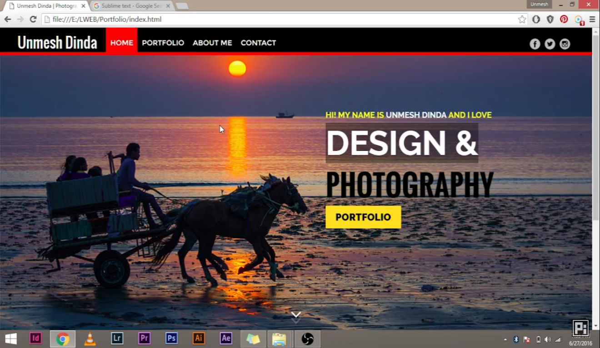
Wireframes and Screen Mockups:
Here are some wireframes and mockups
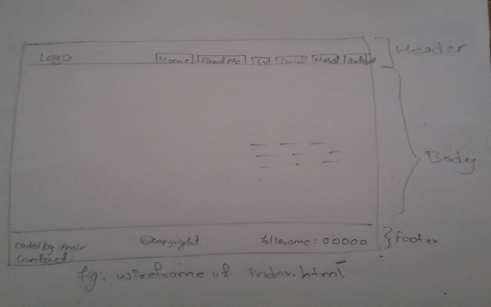
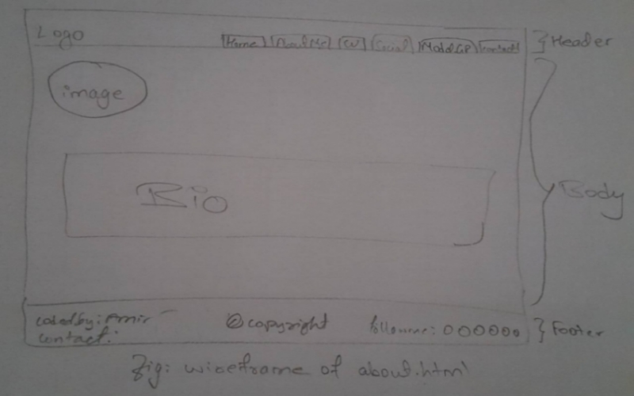
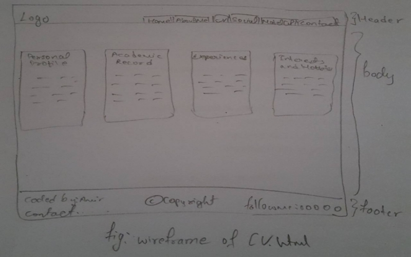
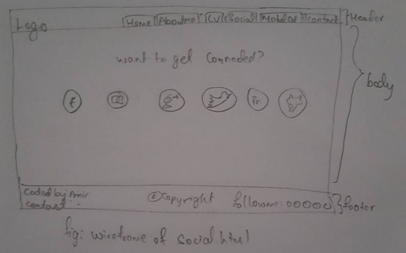
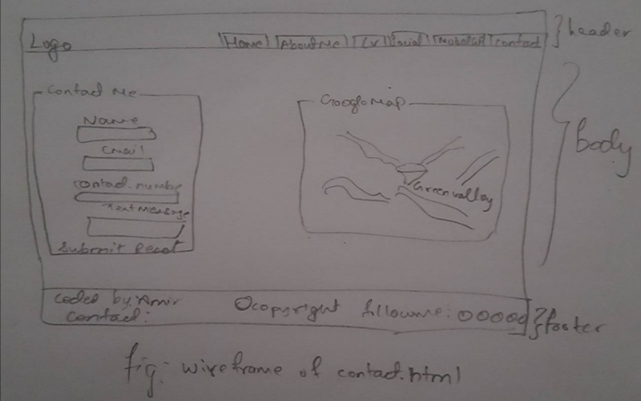
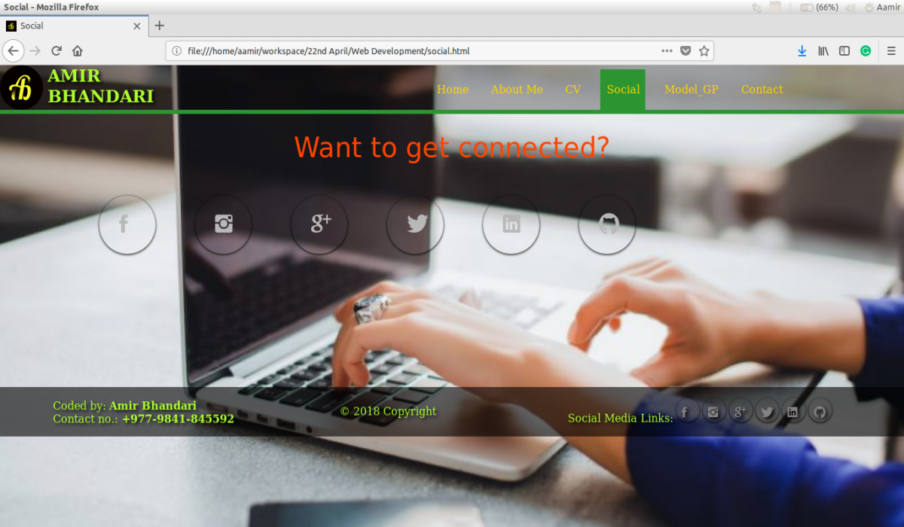
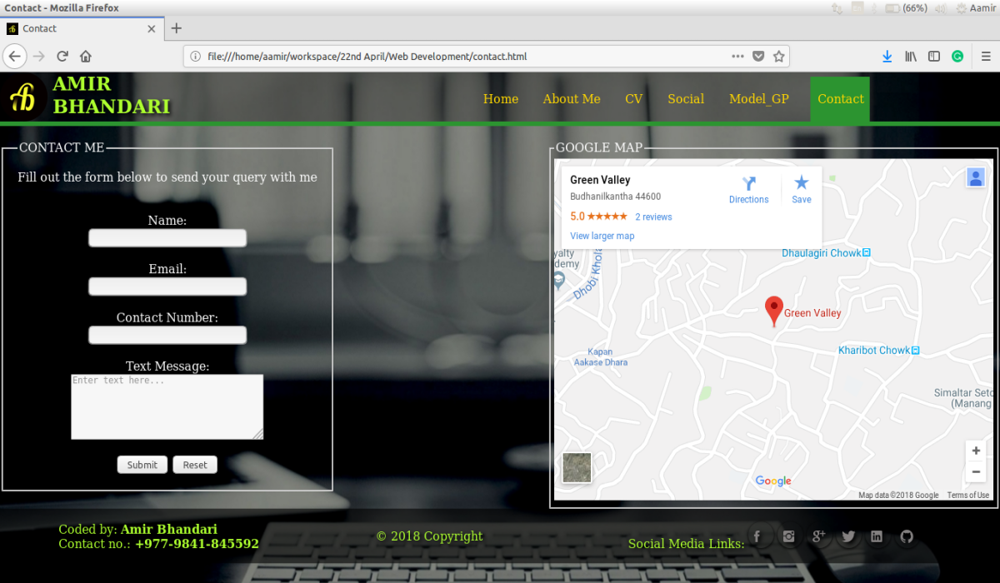
My Experience:
Involving with the computer and to be a good developer is my desirable goal of my life. During school, I learned some of the basic HTML code and afer completing my school level I continued my learning process in programming languages. I came to know the combine form of HTML and CSS creates attractive web design. So, I start learning some more HTML tag and CSS to develop web pages. And now, I am undergraduate at NAMI college learning more knowledge in computer module. So, due to this assignment I came to know about responsive web design as well. Due to this assignment I found myself that I could do more better than this just I need to learn some more tags and css proporties. After completing my learning process I could be a good website developer as the generation behest.
Implementation:
When designing a web pages, different html tag code were implemented. Different web pages requires different code and same way I have used.
The Fieldset tag is used to display as the form field and the source code screenshot for fieldset is shown below:
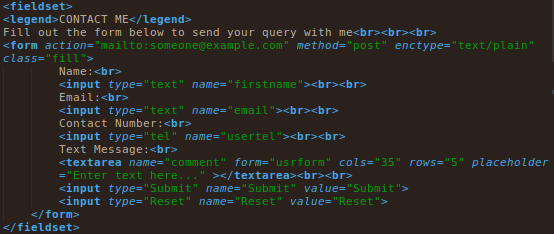
Here is another screenshot of resume source code where flexbox model is used.
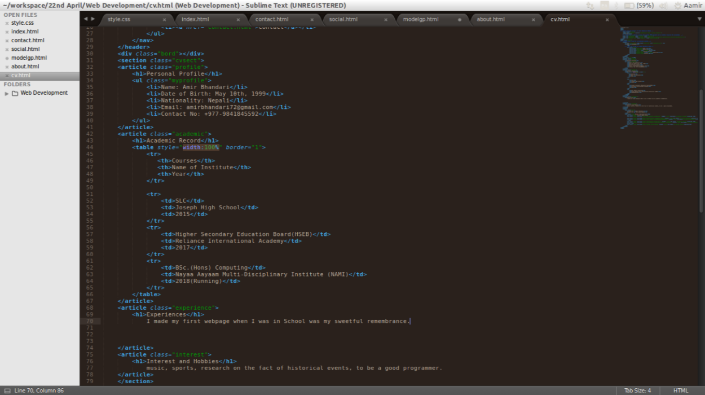
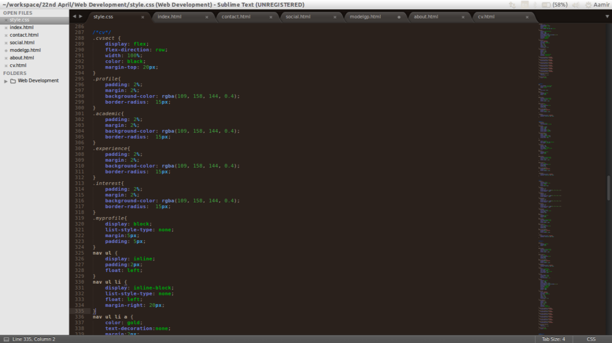
Evidence of Validation:
In assignment brief, we were asked to validate our code in official validator site:https://validator.w3.org/ and these are the some of the screenshot of validation.
validate of index.html
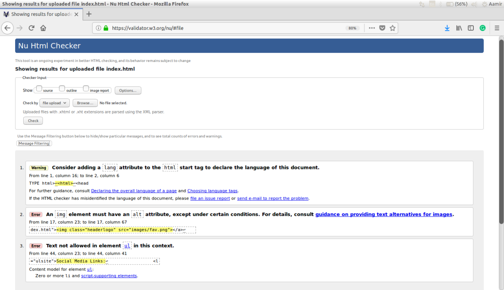
validate of about.html
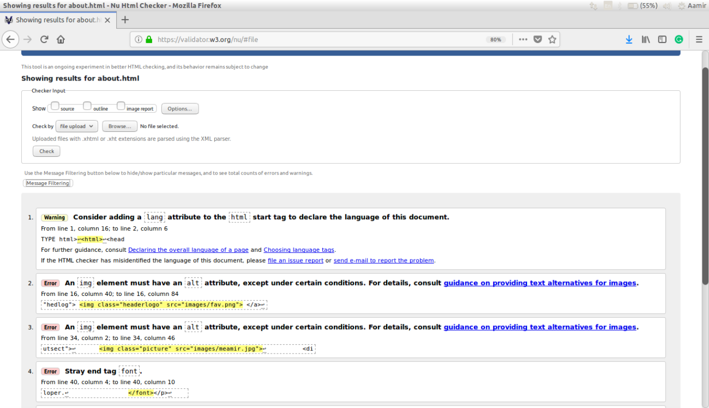
validate of cv.html
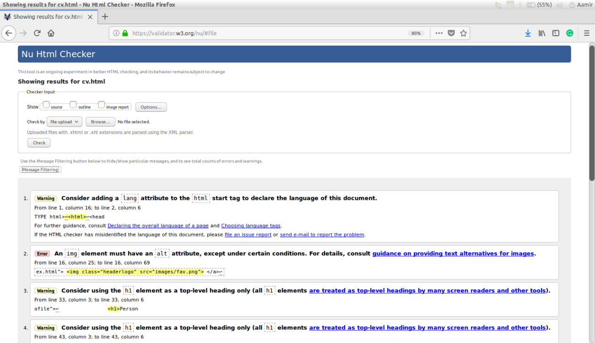
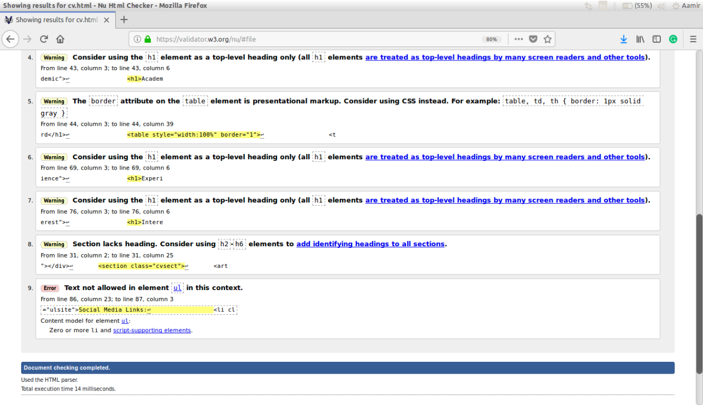
validate of social.html
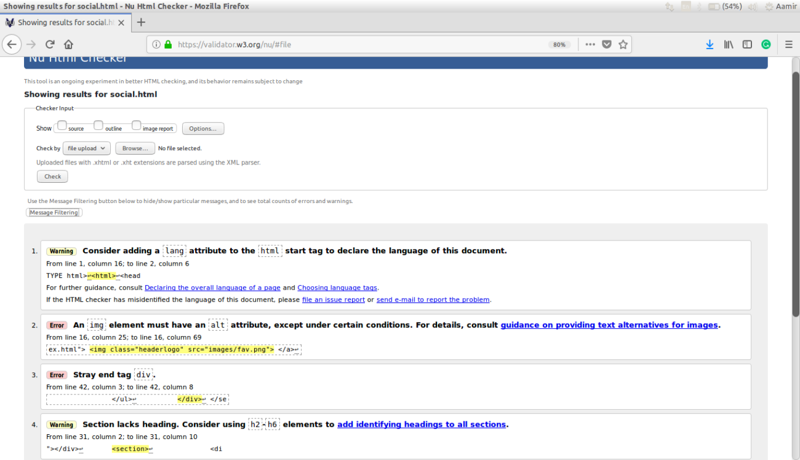
validate of contact.html
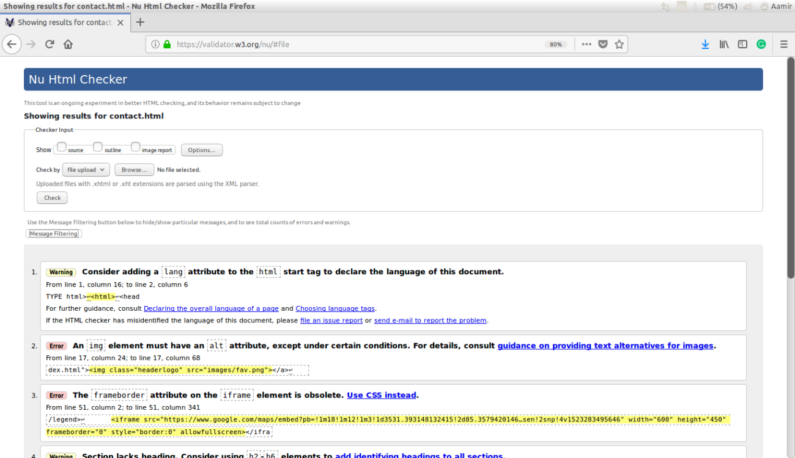
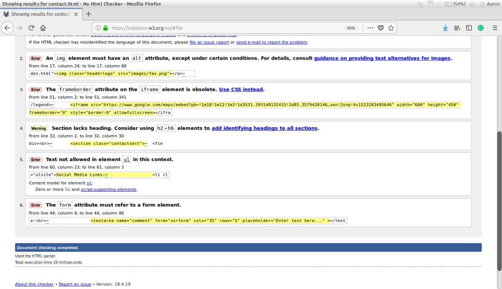
References:
Ionicons (). Available from: http://ionicons.com/ [Accessed 2th April 2018]
w3schools.com () HTML Google Maps. Available from: https://www.w3schools.com/html/html_googlemaps.asp [Accessed 2th April 2018]
w3schools.com () HTML Tables. Available from: https://www.w3schools.com/html/html_tables.asp [Accessed 2th April 2018]
w3schools.com () CSS Layout - Overflow. Available from: https://www.w3schools.com/css/css_overflow.asp [Accessed 2th April 2018]
w3schools.com () CSS Shadow Effects. Available from: https://www.w3schools.com/css/css3_shadows.asp [Accessed 2th Aprol 2018]
w3schools.com () CSS Flexbox. Available from: https://www.w3schools.com/css/css3_flexbox.asp [Accessed 2th April 2018]